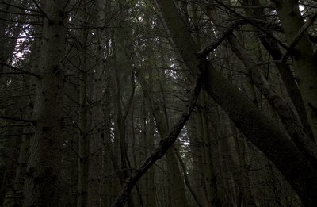
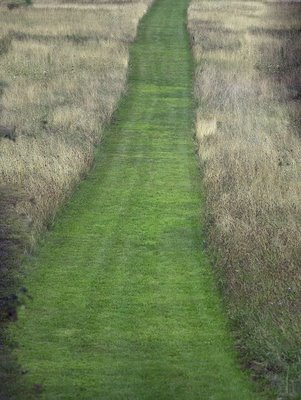

Sunday, August 27, 2006
|Tuesday, August 22, 2006
|

Sunday, August 20, 2006
A Tale Of Two Turtles
Last week I took a walk in the town's new conservation land, Beaver Brook North, on paths winding through the meadows and forests of the grounds of an old, long-closed State Hospital. I'd once, in a poem, called that part of town "the landscape of the fucked" for the plethora of institutions there, from Metropolitan State Hospital, to the Fernald State School, to, upstream and just across the town line in upscale Belmont, the psychiatric hospital of the stars, McLean. It was democratic, this landscape was, as democratic as trouble itself. Met State was already being rehabbed into condos. Governor Romney, a Belmontian, had his beady little venture-capitalist eyes on Fernald, hot to evict profoundly disabled, elderly residents who'd lived there for their whole lives so the property could be sold and made into -- what, condos ?
So there I was, one hot Sunday afternoon, exploring the carriage roads of the rapidly gentrifying landscape of the fucked. The weeds were good, and plentiful: no municipal grim reaper had yet been dispatched from the Romney administration to lay waste to the beautiful roadside waste and trim it into lawn. Mullein, touch-me-not, pokeweed, foxtail, blue curls, rabbit's foot clover, barnyard grass, jimsonweed, hoary alyssum, tansy, Queen Anne's lace, yarrow, sorrell, goldenrod all grew unchecked. I turned down a hot gravel road and saw two teenage boys peering intently into the roadside scrub. I pushed down a frisson of unease, an expectation of boyish mischief afoot, and approached.
After stopping to photograph a yellow mullein blossom, I walked up to the boys. I was curious. Down a small embankment at the edge of a small stream there was a third person, a man.
"What's up ?" I asked. The man pointed excitedly at the water. An enormous turtle was floating under a branch. The boys were excited, too. They were looking intently at the big, floating shell. One of the boys looked at me and explained.
"We found him up there at the state hospital. He was stuck in a window well. He couldn't get out. We just happened to look in there. He must have been stuck there for two weeks. We pulled him out and carried him here and put him in the water. We didn't know what else to do. I think we got to him just in time. But his eyes, his eyes look all messed up. All, like, dried out. I think he's blind. He must be happy to be in the water again. I'm glad we came along when we did. But I think he might be blind. But he'll be OK, I think. He just needs a little time."
We all stood and watched the big floating shell. Did it move, or was it simply rocking back and forth in a current ?
Only time would tell. The boys had acted out of compassion for the poor old creature. They had done their best. I was chastened, but glad to have my expectation of mischief disproven.
Late today, after walking along the river path, I turned onto the footbridge that leads back to the parking lot. Partway across was a group of boys and one man. Some of the boys were fishing. The man was excitedly wielding a cell phone. Was he photographing something with it ? There were often turtles, big ones, visible from the footbridge, paddling just under the surface among the streaming weeds. People often stood and watched them, calling to one another and to any passing stranger to look. But they were hard enough to photograph with my big camera; I couldn't imagine a cellphone cam could pick up more than a fleeting shadow.
I approached. It was a turtle. A turtle not under but on the bridge. A big snapping turtle, a foot and a half across. I was aghast.
"How did it get there ?" I asked a blond, crewcut boy. He looked at me warily.
"Uh, someone accidently caught it and pulled it up here."
Accidently ? The thing must have weighed ten pounds. I looked at their fishing lines. There was a big blue net on the bridge. The turtle was trying to squeeze under the railing, to get back at the water. It didn't fit, but it kept trying. Its hoary brown shell was drying in the sun. I stared at the animal and asked the cell phone man, "What are you going to do with it ?"
He shot me with a hostile, offended look. "What are we going to do with it ? Put it back in the water, of course." His voice was defensive, full of contempt. He sneered at me. "We're going to make turtle soup ! And eat him ! Yeah. Turtle soup ! Mmmmm !"
I felt like I'd been slapped. I'd asked a simple question. As much as I disapproved, I didn't think I'd been accusatory. I stared back at the triumphant, smirking face. He was proud of his turtle soup joke. I could hear him repeating it to his buddies over beer, telling a story in which I was the pathetic, grayhaired bitch, making a fuss over a temporarily beached turtle. I could hear the manly, raucous laughter, united in derision.
"Fuck you," I hissed, and continued across the bridge. He looked shocked. I was seething. I was fed up with predatory men, callous men, sarcastic men, self-righteous men. I could barely register what he was calling after me. Halfway to the footbridge's end I turned, looked straight him, lifted my camera, focused -- maybe I should say locked and loaded -- and shot.
As I headed off the bridge I heard him yell --
"Hey, ma'am, you know -- that's illegal !!"
I smiled. Bull's-eye.
Right middle finger fully and phallically deployed, my smoking Nikon hanging around my neck, I swaggered toward my car.
What on earth had I become ?
So there I was, one hot Sunday afternoon, exploring the carriage roads of the rapidly gentrifying landscape of the fucked. The weeds were good, and plentiful: no municipal grim reaper had yet been dispatched from the Romney administration to lay waste to the beautiful roadside waste and trim it into lawn. Mullein, touch-me-not, pokeweed, foxtail, blue curls, rabbit's foot clover, barnyard grass, jimsonweed, hoary alyssum, tansy, Queen Anne's lace, yarrow, sorrell, goldenrod all grew unchecked. I turned down a hot gravel road and saw two teenage boys peering intently into the roadside scrub. I pushed down a frisson of unease, an expectation of boyish mischief afoot, and approached.
After stopping to photograph a yellow mullein blossom, I walked up to the boys. I was curious. Down a small embankment at the edge of a small stream there was a third person, a man.
"What's up ?" I asked. The man pointed excitedly at the water. An enormous turtle was floating under a branch. The boys were excited, too. They were looking intently at the big, floating shell. One of the boys looked at me and explained.
"We found him up there at the state hospital. He was stuck in a window well. He couldn't get out. We just happened to look in there. He must have been stuck there for two weeks. We pulled him out and carried him here and put him in the water. We didn't know what else to do. I think we got to him just in time. But his eyes, his eyes look all messed up. All, like, dried out. I think he's blind. He must be happy to be in the water again. I'm glad we came along when we did. But I think he might be blind. But he'll be OK, I think. He just needs a little time."
We all stood and watched the big floating shell. Did it move, or was it simply rocking back and forth in a current ?
Only time would tell. The boys had acted out of compassion for the poor old creature. They had done their best. I was chastened, but glad to have my expectation of mischief disproven.
Late today, after walking along the river path, I turned onto the footbridge that leads back to the parking lot. Partway across was a group of boys and one man. Some of the boys were fishing. The man was excitedly wielding a cell phone. Was he photographing something with it ? There were often turtles, big ones, visible from the footbridge, paddling just under the surface among the streaming weeds. People often stood and watched them, calling to one another and to any passing stranger to look. But they were hard enough to photograph with my big camera; I couldn't imagine a cellphone cam could pick up more than a fleeting shadow.
I approached. It was a turtle. A turtle not under but on the bridge. A big snapping turtle, a foot and a half across. I was aghast.
"How did it get there ?" I asked a blond, crewcut boy. He looked at me warily.
"Uh, someone accidently caught it and pulled it up here."
Accidently ? The thing must have weighed ten pounds. I looked at their fishing lines. There was a big blue net on the bridge. The turtle was trying to squeeze under the railing, to get back at the water. It didn't fit, but it kept trying. Its hoary brown shell was drying in the sun. I stared at the animal and asked the cell phone man, "What are you going to do with it ?"
He shot me with a hostile, offended look. "What are we going to do with it ? Put it back in the water, of course." His voice was defensive, full of contempt. He sneered at me. "We're going to make turtle soup ! And eat him ! Yeah. Turtle soup ! Mmmmm !"
I felt like I'd been slapped. I'd asked a simple question. As much as I disapproved, I didn't think I'd been accusatory. I stared back at the triumphant, smirking face. He was proud of his turtle soup joke. I could hear him repeating it to his buddies over beer, telling a story in which I was the pathetic, grayhaired bitch, making a fuss over a temporarily beached turtle. I could hear the manly, raucous laughter, united in derision.
"Fuck you," I hissed, and continued across the bridge. He looked shocked. I was seething. I was fed up with predatory men, callous men, sarcastic men, self-righteous men. I could barely register what he was calling after me. Halfway to the footbridge's end I turned, looked straight him, lifted my camera, focused -- maybe I should say locked and loaded -- and shot.
As I headed off the bridge I heard him yell --
"Hey, ma'am, you know -- that's illegal !!"
I smiled. Bull's-eye.
Right middle finger fully and phallically deployed, my smoking Nikon hanging around my neck, I swaggered toward my car.
What on earth had I become ?
Immaculate
We were, we decided, slaves of the immaculate heart of Billy, our 14 year old tuxedo cat. He was a fine cat, the finest cat, no, the finest being in the whole world, in the whole universe, even. Mr. B was a mensch. Each night he took his place at DK's side and, as we slept, watched the night through the window at the head of our bed. Mr. B. was one with the night; his purr was an elemental throb, like a sound from the earth's core. We adored Mr. B., totally, crazily, beyond all reason.
A year ago we began to notice Mr. B, once a lean, dense, fur-covered muscle, was attenuating. Bird-bones were emerging from under black fur. You could count his ribs; a row of knobby vertebrae led to a pair of sharp, protruding hip bones. Nonetheless, Mr. B. seemed his old self: fond of out, fond of dinner, able to stand up on his hind legs and, looking at us over his shoulder, pat the doorknob with a paw: let me-owt. A few months ago the vet cut through our denial with alarm. There was something brewing chez Mr. B., something not good. She would do tests: bloodwork, a whole-cat xray. She would sample various bodily fluids.

And she found nothing. But Mr. B. was dwindling. His appetite and energy were flagging. We could, the vet said, do more tests. Scans, scopes. A consultation at the tertiary care veterinary hospital. Surgery, chemotherapy.
No thank you, we said. We'd once given a beloved cat, our large, gray longhaired boy-kitty Toscar, a high tech death at the tertiary hospital. Never again, we'd vowed.
So we took Mr. B. home with a bottle of steroids, an infusion bag of saline, and the name of a local vet who made housecalls. We wouldn't subject the B-dog to any more hated car rides.
And, miraculously, after a day or two of steroids, Mr. B. perked up. Began hoovering up the plates of baby food with which we chased him around the house. Began lobbying, once again, for out. We breathed a sigh of uneasy relief. He even gained weight, we thought.
One morning DK called me at work. Mr. B., he said, had found a new morning spot. In the guest room, next to the photo of the Dalai Lama kissing a penguin. Mr. B. was giving important teachings to the Dalai Lama. Undoubtedly the Dalai Lama was becoming a slave of Mr. B's immaculate heart. We added "The Billy Lama" to Mr. B's collection of names.
But, after a month, he began to fail again. He holed up in the shower, in the closet, under the bed, and recoiled from the plates of food we placed under his nose. So we phoned up the itinerant vet. It was time. He would come in 2 days.
It was always about time, I thought, driving late that afternoon to visit my mother. Her appetite and energy were also flagging. I pictured my father pursuing her through the house with plates of food, just as we'd been pursuing Billy. There was chowder that I was to encourage her to eat. It was about food and it was also about time. Mr. B. had spanned 14 years of our life. He, like us, was a tiny light that had blinked on and would blink off within a vast ocean of time. Of time and matter, time and food. I drove toward my childhood home; shafts of late sunlight pierced the pine woods to my left. To my right, down a dark slope, was the river.
The vet, bespectacled, earringed, blue-jeaned and absurdly handsome, arrived with his black bag. I'm J., he said, quietly, and moved toward Mr. B, who was crouched on a small table near the sofa. He watched Mr B. for a while then gently lifted him to the floor. "There's a mass in the abdomen," he said softly, palpating Mr. B's underbelly. "Like a small lemon. Right here, see ?" I felt the soft, indistinct round thing near the right ribs.
Did he think Mr. B. was in pain ?
"It's not an easy question to answer," replied Dr. J. He studied Billy. "He looks glum," he said. "Melancholic."
So we could try some subcutaneous fluids and an injection of steroids; perhaps we'd buy Mr. B. some more quality time. We'd know within 36 hours. Or, said the vet, we could simply give him an easy way out. I looked at DK. We'd try the shot and the saline. Billy relaxed under Dr. J's practiced hands.

The next morning, at the sound of kitty crunchies hitting the bowl, Mr. B. arrived and tucked in with enthusiasm. Our hearts leaped. But by the next morning it was clear that the remission had been ephemeral: Billy was once again in retreat under the bed. Two dull green eyes stared out at us of the dusty darkness. He turned from the proffered food, adamant. Let me-owt, he seemed to say.
Late that night, fresh from a long drive back from New York, interrupting the beginning of his vacation for Mr. B., the devoted Dr. J. returned. We placed Billy on our bed. Dr. J. gazed into his eyes.
"Yes," he said, quietly. "He's not even focusing. I think you're right. I think it's time to give him an easy way out." One shot would relax him, and put him to sleep. Another would stop his immaculate heart.

It was time to give him an easy way out, and so we did. Out of what did we give him the easy way ? Out of time and out of matter. We watched as Billy subsided into a small, warm pile of fur and bones at the foot of our bed. We watched (although he suggested we might not want to) as Dr. J. placed what was left of Billy into the cadaver bag. There was emptiness but there was also form. We knew that. Matter had its exigencies. Things had to be dealt with. Transactions had to occur. We'd have to gather up the plates of untouched food. We'd have to call the crematorium. Tomorrow morning we'd have to eat breakfast.
We watched Dr. J. carry the small, black receptacle out into the night. We watched as his car -- a gleaming, black Humvee -- rolled down the dark street and disappeared over the crest of the hill, leaving us, the faithful slaves of Billy's now-stilled, but ever-immaculate heart, behind. And, stuck here in time, we began to wait out the long, the seemingly endless tedium of grief.
Saturday, August 12, 2006
Colloidal
It was Sunday morning, but I was in a bird, not a church sanctuary. The air was hot and still over the marsh boardwalk at Broadmoor. Since my last visit, the water had grown a confluent, green skin, a rich, colloidal slurry of duckweed and other small, floating plants. Like a lid, it added to the stillness.

Arrow arum, cattails, water lilies, pickerelweed
and loosestrife stood motionless above the surface, all frozen within the white noise of cicadas.
Kneeling on warm wood, I peered over the edge of the boardwalk. Green hearts, half swallowed in green, floated on the water
and a few fat, yellow flowers -- bull lilies -- canted a few inches above the surface face to face with their shadows.
This is the essence of August, I thought: this heaviness, this stillness, this containment, this immersion. My own shadow knobbed the green opacity a few feet below. I was a thwarted narcissus; the marsh was doing more to undermine my ego than a lifetime of meditation. We breathed toward each other's mouths; a dragonfly hung in the mixed atmosphere between.
This was the time of abundance. If spring had been the measured entrances of strings, then winds, then a horn or two, this was the full orchestra, a cadence chord played at sostenuto for so long the desire for the tonic resolution becomes unbearable.
I felt fragments of Hart Crane trying to break the thick surface of my memory -- adagios of islands, wind flaking sapphire the seething, steady leveling of the marshes, the silken, skilled transmemberment of song -- all those gorgeous, latinate river and ocean voyages
toward watery death.
Was this the valley of the 23rd psalm ? Were these the shadowy waters with which my cup was running over
and beside which I was being led ?
From across the marsh came a harshly bowed interval, a tritone, the devil's interval, then a second, antiphonal, then silence.
This was the fully drawn inbreath.
This was pinnacle moment of repose
before the long collapse toward winter.
World without end, I muttered, and headed toward the woods.

Arrow arum, cattails, water lilies, pickerelweed
and loosestrife stood motionless above the surface, all frozen within the white noise of cicadas.
Kneeling on warm wood, I peered over the edge of the boardwalk. Green hearts, half swallowed in green, floated on the water
and a few fat, yellow flowers -- bull lilies -- canted a few inches above the surface face to face with their shadows.
This is the essence of August, I thought: this heaviness, this stillness, this containment, this immersion. My own shadow knobbed the green opacity a few feet below. I was a thwarted narcissus; the marsh was doing more to undermine my ego than a lifetime of meditation. We breathed toward each other's mouths; a dragonfly hung in the mixed atmosphere between.
This was the time of abundance. If spring had been the measured entrances of strings, then winds, then a horn or two, this was the full orchestra, a cadence chord played at sostenuto for so long the desire for the tonic resolution becomes unbearable.
I felt fragments of Hart Crane trying to break the thick surface of my memory -- adagios of islands, wind flaking sapphire the seething, steady leveling of the marshes, the silken, skilled transmemberment of song -- all those gorgeous, latinate river and ocean voyages
toward watery death.
Was this the valley of the 23rd psalm ? Were these the shadowy waters with which my cup was running over
and beside which I was being led ?
From across the marsh came a harshly bowed interval, a tritone, the devil's interval, then a second, antiphonal, then silence.
This was the fully drawn inbreath.
This was pinnacle moment of repose
before the long collapse toward winter.
World without end, I muttered, and headed toward the woods.
Saturday, August 05, 2006
Smack It Down, Take It Up
It was 10:30 and we'd been in the ER since 6:30. At nine a pleasant nurse finally brought my mother to a room, warning us that the doctor would not be in for another hour. At least there she was able to huddle under four blankets and a sheet to stave off the ungodly hyper-airconditioned chill of the department.
Late that afternoon my mother's wonderful, attentive doctor, a young alumna of my own medical school, had phoned up to tell me the blood tests were a bit worse, and she felt an admission to the hospital was warranted. There was no awful crisis, but she'd been lethargic, her anemia and renal insufficiency were worsening, and tests for various non-specific antibodies and markers of inflammation were alarmingly high. Could it be a bloodstream infection ? She directed us to the ER of a local hospital.
"Uh, could she be a direct admission ?" I asked, my heart sinking at the phrase "emergency room."
"No," she replied. It would be better to have a doctor examine my mother and review her admission labs. She'd call ahead and speak to the ER doc.
So five and a half hypothermic hours later father and I were shivering at my mother's bedside in the hospital's spiffy, renovated ER.
"I'm cold," my mother commented. "My nose is cold." We pulled the blankets up over her nose.
"My nose is cold too," said my cheerful Dad. "Now I understand why eskimos are said to kiss by rubbing noses -- it's to warm them up !"
The laugh lines around my mother's pretty eyes crinkled. The rest of her was buried under a mountain of blankets.
The doctor finally swooped in. He gave a hearty greeting, but it was easy to see that he was busy and a bit annoyed. I attempted a synopsis of the issues, mentioning the extraordinarily high sed rate and rheumatoid factor, and the possibility of infectious endocarditis.
He shot me a pointed, hostile look. "Oh, oh. In coming smack-down," I thought, flinching. Anyone who's gone through medical training will recognize it, this mini-PTSD response. To this day, I still can't approach a radiologist without steeling myself for abuse because of one unpleasant, sarcastic radiology attending from my internship.
"You don't get elevated rheumatoid factor in endocarditis," he sneered.
"Yes, you do," I hissed, my cheeks reddening.
I thought of the movie we'd seen over the weekend, a darkly comic, magnificently, excruciatingly grim Romanian movie, The Death of Mr. Lazarescu. It was about one poor, old fellow's last night on earth -- his voyage through four different emergency rooms full of various hostile, contemptuous, indifferent and frankly abusive providers, shepherded by an ambulance nurse determined to get him the care he needed. In one scene she makes the mistake of telling the attending MD that she thought Mr Lazarescu might have a colon cancer. She'd examined his belly, she explained, and it was rock hard. The doctor had smelled liquor on our hero's breath and had already dismissed him as just another alcoholic. "You pig," he said. "You drink yourself sick then expect us to make you better." He turned to the nurse.
"Colon cancer ?" he sneered, "So you're the doctor now ? A nurse, making a diagnosis ? Questining the doctor ? How dare you !"
Incoming smackdown.
The ER doctor finished examining my mother. Eventually he asked me whether I was some kind of medical professional.
"I'm a physician," I said. He became a little more respectful and explained that he didn't understand why my mother had been sent to the ER rather than being directly admitted.
"Frankly," I replied, after repeating her doctor's reasoning, "neither do I. But I am my mother's daughter, not her internist, so I did as she requested."
He went off to review her blood tests, ordered an EKG and a chest xray, and disappeared.
By 12:30 I was feeling addled and claustrophobic. I kept calculating how many hours of sleep I could get, factoring in drive time from the north shore to Waltham, supper (no, skip that, no time) and an alarm clock poised to go off at 5:30. I'd left a stack of paperwork unfinished at work. I'd have to go in early. Ugh.
"I'm cold. When will they bring me to my room ?" came a small voice from under the mountain of blankets.
I was cold too. I snuck a sheet from a shelf and wrapped myself in it. My cheerful father made a Ku Klux Klan joke.
I suggested my Dad go ask a nurse what we were waiting for.
Eventually, a nurse arrived and announced that the doctor was waiting to review one more test that hadn't came back yet.
"What test ? And when will it be back ?"
"A BNP.It will be back in half an hour."
BNP is a test for cardiac decompensation. One of the only major organs of my mother's that was currently, albeit tenuously compensated, was her heart. I grew impatient.
"My mother's doctor sent her here with the thought she would be admitted," I said. "Are you saying her admission will be based on this one test ? If, after being here over six hours, she's not admitted I'm going to be pretty pissed off !"
"We are the Emergency Room, and we have our own standards and protocols for admission. Your mother's doctor knows she has ways available to her to admit patients. If you are unhappy, you should take it up with your mother's doctor." She grew haughtier and haughtier by the word. "Is there anything else I can help you with ?"
My cheerful father piped up. I cringed.
"Yes, it's freezing in here. Can't anything be done about how cold it is ?"
"You can take it up with engineering," she snapped, and left.
"I'm cold. When will they bring me to my room," came the plaintive voice from the blankets.
Five minutes later the doctor returned. By now the ER was quieter. I had hit the four hours or less of sleep mark in my calculations, and my core temperature was headed toward the low nineties. I'd have to take that up with engineering. Or check myself into the ER for hypothermia. The BNP was normal, he said. He'd call my mother's doctor and admit my mother. He was sorry he'd been impatient. The night had been busy, and patients like my Mom -- who could have been admitted without a sojourn in the ER -- were not the ER's real mission, and racked up unnecessary costs.
"Take that up with my mother's doctor," I said.
Pretty good smack-down, eh ?

Links
- juan cole
- duemer
- brtomblog
- brtomtwo
- dumbfoundry
- mole
- PaperFrog.com
- Cassandra Pages
- PureLandMountain
- hermitary
- meetingbrook
- philocrites
- hoarded ordinaries
- prairie point
- Via Negativa
- Heart @ Work
- Eschaton
- Frumpy Professor
- Fatshadow
- susurradrluz
- sbpoet
- timegoesby
- depth-witness
- seekingclarity
- self-winding
- eeksypeeksy
- woodslot
- switchedatbirth
- middlewesterner
- pomegranates&paper
- postcards2moi
- mindfullife
- urbanist
- Zippy the Fish
- Laughing~Knees
- nineweaving
- JCA
- thoreau
- adventus
- creeknorth
- NEviews
- frizzylogic
- 3rdhouseparty
- churchless
- thegarden
- oneword
- notnativefruit
- alwaysmorebeyond
- jackzen
- suzanna
- apparantlynothing
- chimesatmidnight
- blaugustine
- sweetpeakate
- thegarden
- q'pop
- spiritblooms
- flamingohouse
- onehouse
- ladybugsleaf
- tothequiet
- shokai
- olderandgrowing
- robe&bowl
- beyondthefields
- returntothecenter
- ravengrrl
- alwaysmorebeyond
- sunpatch ***
- email me

Previous Posts
- Other People's Gardens
- -culture
- Counterweight
- In Which We Know What We Like
- Last Things
- Some Clever And Colorful Cousins
- A Ghost, A Post and Zelig
- Relevant Lines
- Some Saprophytes and an Eremite
- Between
Archives
- 08/01/2003 - 08/31/2003
- 09/01/2003 - 09/30/2003
- 10/01/2003 - 10/31/2003
- 11/01/2003 - 11/30/2003
- 12/01/2003 - 12/31/2003
- 01/01/2004 - 01/31/2004
- 02/01/2004 - 02/29/2004
- 03/01/2004 - 03/31/2004
- 04/01/2004 - 04/30/2004
- 05/01/2004 - 05/31/2004
- 06/01/2004 - 06/30/2004
- 07/01/2004 - 07/31/2004
- 08/01/2004 - 08/31/2004
- 09/01/2004 - 09/30/2004
- 10/01/2004 - 10/31/2004
- 11/01/2004 - 11/30/2004
- 12/01/2004 - 12/31/2004
- 01/01/2005 - 01/31/2005
- 02/01/2005 - 02/28/2005
- 03/01/2005 - 03/31/2005
- 04/01/2005 - 04/30/2005
- 05/01/2005 - 05/31/2005
- 06/01/2005 - 06/30/2005
- 07/01/2005 - 07/31/2005
- 08/01/2005 - 08/31/2005
- 09/01/2005 - 09/30/2005
- 10/01/2005 - 10/31/2005
- 11/01/2005 - 11/30/2005
- 12/01/2005 - 12/31/2005
- 01/01/2006 - 01/31/2006
- 02/01/2006 - 02/28/2006
- 03/01/2006 - 03/31/2006
- 04/01/2006 - 04/30/2006
- 05/01/2006 - 05/31/2006
- 06/01/2006 - 06/30/2006
- 07/01/2006 - 07/31/2006
- 08/01/2006 - 08/31/2006
- 09/01/2006 - 09/30/2006
- 10/01/2006 - 10/31/2006


{kind=link}
{kind=link}
{kind=link}
{kind=link}
{kind=link}
{kind=link}
{kind=link}
{kind=link}
{kind=link}
{kind=link}
{kind=link}
{kind=link}
{kind=link}
{kind=link}
{kind=link}
{kind=link}
{kind=link}
{kind=link}
{kind=link}
{kind=link}
{kind=link}
{kind=link}
{kind=link}
{kind=link}
{kind=link}
{kind=link}
{kind=link}
{kind=link}
{kind=link}
{kind=link}
{kind=link}
{kind=link}
{kind=link}
{kind=link}
{kind=link}
{kind=link}
{kind=link}
{kind=link}
{kind=link}
{kind=link}
{kind=link}
{kind=link}
{kind=link}
{kind=link}
{kind=link}
{kind=link}
{kind=link}
{kind=link}
{kind=link}
{kind=link}
{kind=link}
{kind=link}